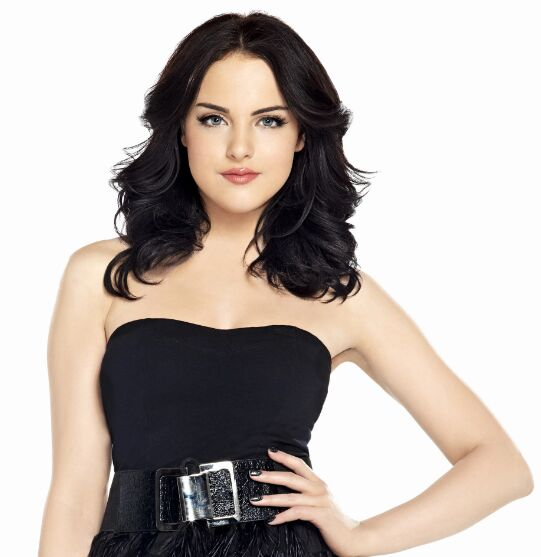
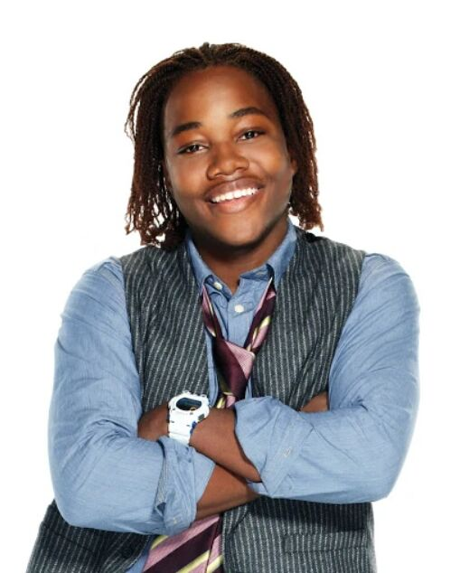

The Players
| Role |
Biography |
Picture |
| Our Singer |
Meet Sarah Thompson, the soulful and captivating lead vocalist and guitarist of Catching Roses. With her mesmerizing voice and undeniable stage presence, Sarah's talent shines through, creating unforgettable moments for audiences. Her ability to infuse each song with emotion and her skillful guitar playing make her an integral part of the band's enchanting performances. Get ready to be captivated by Sarah's heartfelt vocals and dynamic energy as she brings magic to your wedding day with Catching Roses. |
|
| Our Drummer |
Introducing Emily Carter, the rhythmic heartbeat of Catching Roses. With her impeccable timing and dynamic drumming skills, Emily brings a contagious energy to the band's performances. Her powerful beats and creative fills set the groove that keeps audiences moving and sets the stage on fire. Get ready to feel the pulse of the music as Emily's drumming takes you on an exhilarating musical journey with Catching Roses. |
 |
| Our Guitarist |
Meet Mark Reynolds, the soulful guitarist who adds a touch of magic to Catching Roses' performances. With his masterful skills and expressive playing, Mark's guitar melodies weave seamlessly through each song, creating enchanting harmonies. Whether it's delicate fingerpicking or electrifying solos, Mark's musical artistry adds depth and emotion to every performance. Prepare to be moved by the captivating soundscapes created by Mark's guitar in harmony with Catching Roses. |
|
| Our Bassist |
Meet Olivia Reynolds, the dynamic bassist of Catching Roses. With her rhythmic expertise and infectious groove, Olivia brings an irresistible energy to the band's performances. Her deep and melodic bass lines provide a solid foundation that keeps audiences on their feet and sets the stage on fire. Get ready to feel the pulsating rhythm as Olivia's bass playing adds depth and soul to Catching Roses' music, making your wedding celebration an unforgettable experience. |
|
| Our Keyboardist |
Introducing James Anderson, the versatile keyboard player of Catching Roses. With his melodic sensibility and dynamic range, James brings depth and texture to the band's sound. From delicate piano melodies to lush orchestral arrangements, James's keyboard playing elevates every song, adding layers of beauty and emotion. Get ready to be transported by the enchanting sounds created by James and experience the musical magic of Catching Roses. |
 |